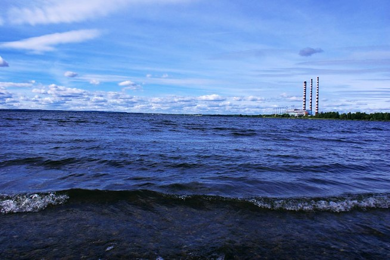
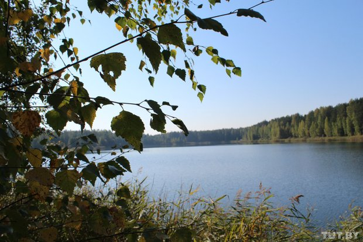

Лукомльское озеро
Четвертое по величине озеро в Беларуси (по некоторым данным пятое). Естественный водоем, который в свое время был частью ледника. Уже 45 лет используется для охлаждения Лукомльской ГРЭС, что повлияло на биологические процессы в озере, скорее положительно, чем отрицательно. Вода возвращается в озеро гораздо теплее, чем забирается оттуда. В связи с этим озеро замерзает намного позже обычного, и таяние льда начинается раньше. Из-за того, что температура на озере выше обычной, на водоеме создаются благоприятные условия для ловли практически любой рыбы. Сейчас насчитывает порядка 20 видов и на западном побережье можно даже ловить раков. К тому же озеро часто зарыбляют угрем, амуром, судаком. Многочисленные моллюски очищают его и делают рыбалку поистине богатой. На озере очень много уклейки, при этом она ловится на любую приманку. Из-за этого бывает затруднительно выловить что-то еще. Щука есть по всей территории водоема. Хорошо клюет густера. Настоящий курортный отдых в Беларуси предлагает усадьба «Абузерье», расположенная на берегу красивого озера Лукомльское. Шикарный пляж со стороны города. На побережье расположены: детский лагерь отдыха “Юность” и профилакторий “Сосновый бор”.Здесь, на берегу озера, можно хорошо провести время в жаркие летние месяцы. Чистый и ухоженный пляж, соединяемый с городом подвесным мостом, теплая и прозрачная вода создают возможность для спокойного и размеренного времяпрепровождения. Желающие могут остановиться на несколько дней в местной гостинице, а те, кто выбирает путешествия «дикарём», могут разбить свои палатки на берегу озера, благо живописных мест здесь достаточно.
Озеро Селява
Живописная природа Белорусского края, шелест воды, щебетание птиц – это именно то, что можно наблюдать, посетив озеро Селява. Отдых с палатками здесь активно процветает. А тем, кто не хочет расставаться с привычными комфортабельными условиями, предлагается поселиться в усадьбах. Это место наполнено элементами Средневековья, что придает ему особенный шарм. Природа здесь не только красивая, но и экологически чистая. Для того чтобы посетить озеро, туристы съезжаются сюда со всего мира. Эти места подарят наслаждение, покой, и, что самое важное, за время отдыха можно значительно поправить свое здоровье. Озеро Селява расположено на северо-востоке Беларуси в двенадцати километрах от города Новолукомля. Оно текучее, пополняется за счет рек Высокое и Ракитовка, и соединяется широким каналом с водоемом Обида. Селява является одним из красивейших и крупнейших озер Беларуси (девятое место по объему воды!), площадь его составляет 15 квадратных километров, глубина – 19 метров. Дно водоема покрыто песком вперемешку с мелкой речной галькой, но встречаются и иловые наносы. В центре озера расположены три острова. Береговая зона рельефна, образует большое количество заливов, бухт и мысов. Берега низкие в основном заболоченные, с севера и юга возвышенные, покрытые кустарниками и редким полесьем. Вода в озере светлая, в летний период прозрачность превышает два метра. Про озеро Селява местные жители рассказывают легенду: будто бы 28 августа 1942 года над озером был сбит американский самолет Пе-8, который перевозил на своем борту в Великобританию четыре тонны золота. Скорее всего, это просто миф, красивая сказка для приезжих, так как водоем не настолько глубок, чтобы его не смогли осмотреть водолазы. Однако легенда имеет место быть.
Карьер
В сосновом лесу в восьми километрах от Новолукомля расположилась "База охотника и рыбака". Изначально здесь был карьер – весь Новолукомль построен на песке из этого карьера. Карьер находится в аренде у местного предпринимателя. Здесь можно арендовать столик с лавочками, беседку, мангал, место для палаток, баню, спальные места и так называемые столовые зоны.
Памятник Ф.Ф.Озмителю
В центре Новолукомля расположен монумент в честь героя войны Ф.Ф. Озмителя.В июне 1944 года во время вражеской блокады у озера Палик (Минская область) старший лейтенант Ф.Ф. Озмитель командовал группой по прорыву блокады. 15 июня партизаны прорвали 3 линии обороны противника, и большая их часть вышла из блокады. Ф. Ф. Озмитель был тяжело ранен и остался прикрывать огнём отход партизан. Когда закончились патроны, подорвал себя и врагов связкой гранат.Похоронен в братской могиле в деревне Маковье Борисовского района Минской области.Указом Президиума Верховного Совета СССР от 5 ноября 1944 года Ф. Ф. Озмителю посмертно присвоено звание Героя Советского Союза.